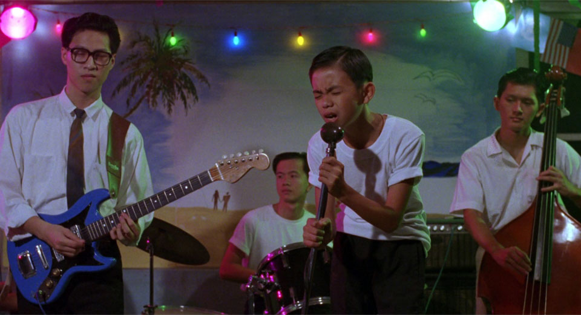

November 27, 2024

A coming of age narrative epic about teenage loneliness which does so much so well yet makes me feel emotionally detached from the story the entire way through.
I feel like my main critiques about this film have to do a lot with my disagreements about Edward Yang's style of filmmaking -- which of-course many people love to death, so i'm definitely the odd one out here.
The static cameras and this weirdly monotonous delivery (almost feels like a highschool play???) of all the dialogue causes many scenes to have an almost robotic and cold atmosphere which is hard for me to ignore. This style does indeed work in other films such as Cure where the goal is to create this surreal and uncanny feeling, but here since the story is about the conflicted emotional journey of a teenager, i just don't see how it fits.
There is so much happening in the story on a narrative level that it doesn't allow me to get emotionally invested enough on the one or two primary threads. To be fair, I think the second half of the film does a much better job of this once the gang war storyline -- which i still think is largely unnecessary -- is completed and we can focus on the dynamic between the kids, mainly Si'r and Ming. In general, the more you add to the story like this, the more you dilute the importance of each arc thus neutralizing the effect of the most central parts of the narrative. There were certain portions in the second act where it is genuinely nauseating to have a full grasp on exactly what is going on without losing track.
The main characters deserve more focus on the HOW and WHY of their mentality compared to just the WHAT. This is where i thought richer dialogue could have greatly helped provide nuance to each person. I feel like this movie takes the principle of show don't tell too far where the characters rarely outwardly express their motivations and desires, rather the audience has to fill all those holes based off the character's actions -- which potentially leads to a more simplistic interpretation of each character than what is intended.
To be fair to the film, i thought it did a lot of things extremely well. The unease that Si'r constantly feels is expressed excellently and Ming's mature behavior provides a much needed emotional complexity to the story. Which is what makes me think back to Yi Yi and why i liked it so much. That film gives each character more nuance and paints a much richer tapestry compared to this film even though the core story is significantly simpler while still nailing this format of a large stretching story with multiple characters and individual storylines.
All in all, i feel like my personal preferences are much more aligned with someone like Koreeda's vision of storytelling which deals with a much smaller scope and fewer characters but provides each with richness and nuance that makes it feel more natural and human overall.